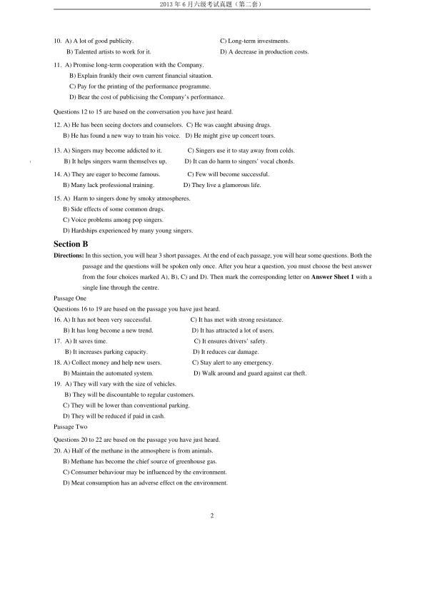
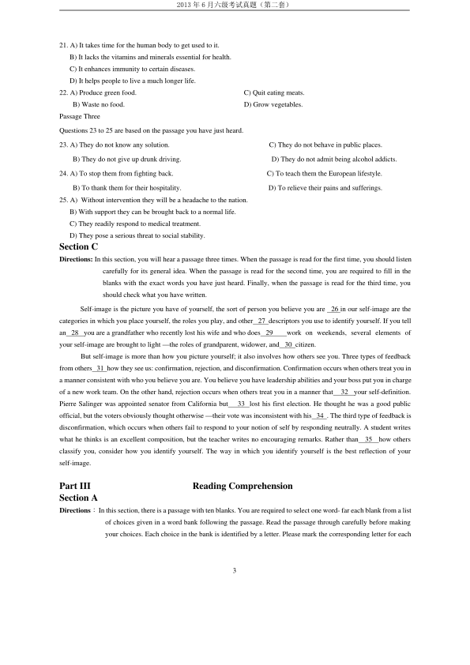
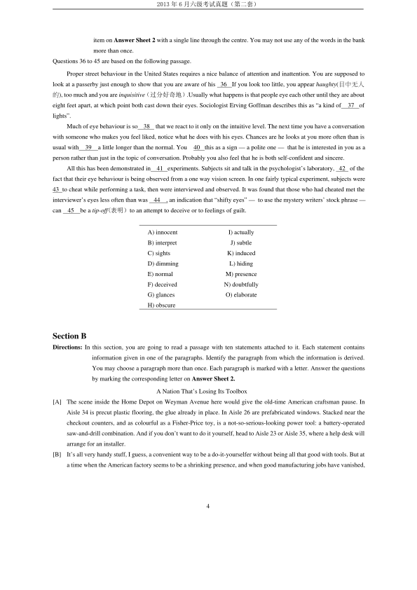
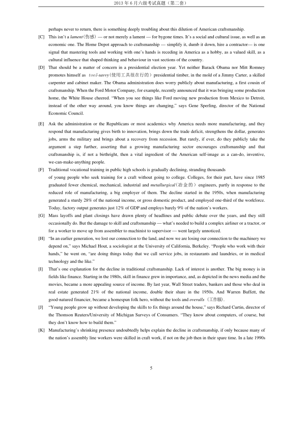
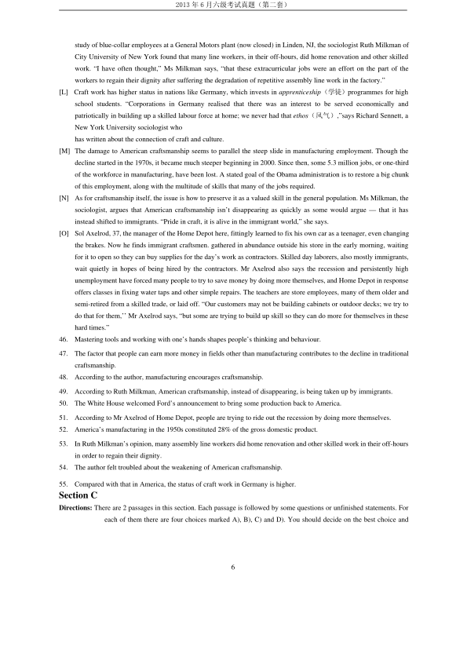
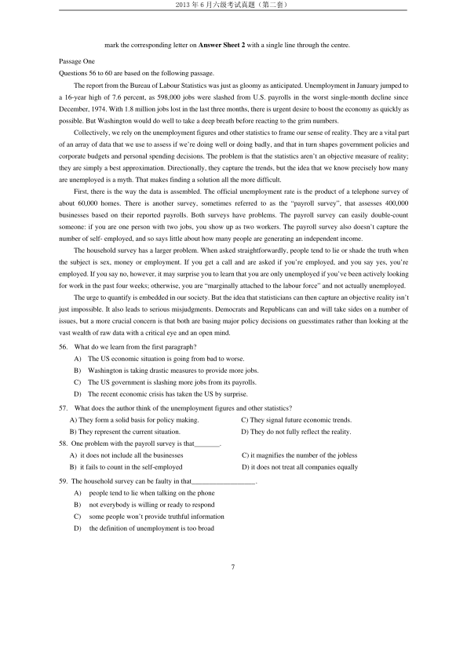
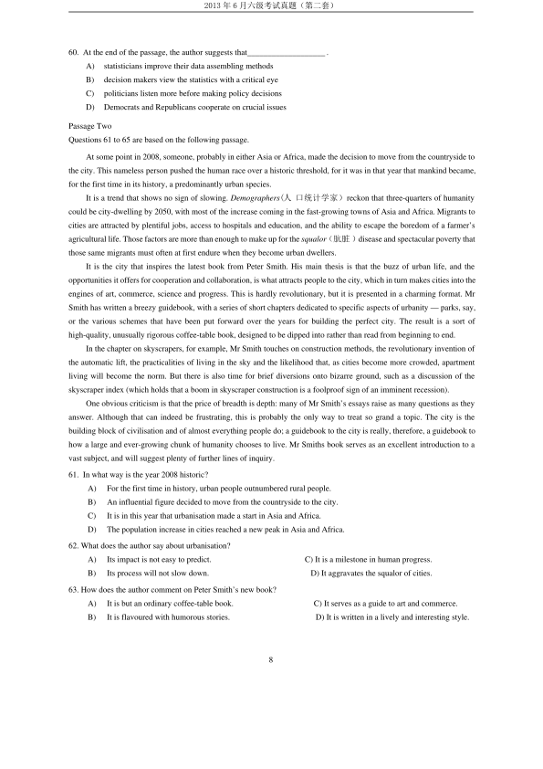

第 1 / 9 页

2013 年6 月六级考试真题（第二套）
1
2013 年6 月六级考试真题（第二套）
PartⅠ
Writing
Directions: For this part, you are allowed 30 minutes to write an essay commenting on the remark “Good habits result from
resisting temptation.” You can cite examples to illustrate your point You should write at least 150 words
but no more than 200 words.
Part II
Listening Comprehension
Section A
Directions: In this section, you will hear 8 short conversations and 2 long conversations. At the end of each conversation,
one or more questions will be asked about what was said. Both the conversation and the questions will be
spoken only once. After each question there will be a pause. During the pause, you must read the four choices
marked A), B), C) and D), and decide which is the best answer. Then mark the corresponding letter on Answer
Sheet 1 with a single line through the centre.
1.
A) Why his phone had been disconnected.
C) Why he didn’t leave her a message.
B) Why she could not get through to him.
D) Why he refused to answer her call.
2.
A) The houses within his price range are sold out.
B) Most people in this city want to own a home.
C) He has difficulty finding affordable housing.
D) The woman should rent a nicer apartment.
3. A) The woman would like the man to take care of her mail.
B) The woman has put the number into everyone^ mailbox.
C) The new copy machine can meet everyone’s needs.
D) A code number is necessary to run the copy machine.
4. A) He will stop work to take care of the baby.
C) His wife is going to give birth to a baby.
B) He will find a job near his home next year.
D) His wife will leave her work soon.
5. A) The shopping centre is flooded with people.
C) Parking in this city is a horrible nightmare.
B) They will come to the mall some other day.
D) She will wait for the man at the south gate.
6.
A) He will be back in a minute to repair the computers.
B) It will take longer to reconnect the computers to the Net.
C) He has tackled more complicated problems than this.
D) A lot of cool stuff will be available online tomorrow.
7. A) She forgot to call her mother.
C) She did see Prof Smith on TV.
B) Prof Smith gives lectures regularly on TV.
D) Her mother is a friend of Prof Smith’s.
8. A) The man has to wait to get his medicine.
B) The store doesn’t have the prescribed medicine.
C) The man has to go to see his doctor again.
D) The prescription is not written clearly enough.
Questions 9 to 11 are based on the conversation you have just heard.
9. A) It is advertising electronic products.
C) It is sponsoring a TV programme.
B) It is planning to tour East Asia.
D) It is giving performances in town.
查看 / 复制本页文字
2013 年6 月六级考试真题（第二套） 1 2013 年6 月六级考试真题（第二套） PartⅠ Writing Directions: For this part, you are allowed 30 minutes to write an essay commenting on the remark “Good habits result from resisting temptation.” You can cite examples to illustrate your point You should write at least 150 words but no more than 200 words. Part II Listening Comprehension Section A Directions: In this section, you will hear 8 short conversations and 2 long conversations. At the end of each conversation, one or more questions will be asked about what was said. Both the conversation and the questions will be spoken only once. After each question there will be a pause. During the pause, you must read the four choices marked A), B), C) and D), and decide which is the best answer. Then mark the corresponding letter on Answer Sheet 1 with a single line through the centre. 1. A) Why his phone had been disconnected. C) Why he didn’t leave her a message. B) Why she could not get through to him. D) Why he refused to answer her call. 2. A) The houses within his price range are sold out. B) Most people in this city want to own a home. C) He has difficulty finding affordable housing. D) The woman should rent a nicer apartment. 3. A) The woman would like the man to take care of her mail. B) The woman has put the number into everyone^ mailbox. C) The new copy machine can meet everyone’s needs. D) A code number is necessary to run the copy machine. 4. A) He will stop work to take care of the baby. C) His wife is going to give birth to a baby. B) He will find a job near his home next year. D) His wife will leave her work soon. 5. A) The shopping centre is flooded with people. C) Parking in this city is a horrible nightmare. B) They will come to the mall some other day. D) She will wait for the man at the south gate. 6. A) He will be back in a minute to repair the computers. B) It will take longer to reconnect the computers to the Net. C) He has tackled more complicated problems than this. D) A lot of cool stuff will be available online tomorrow. 7. A) She forgot to call her mother. C) She did see Prof Smith on TV. B) Prof Smith gives lectures regularly on TV. D) Her mother is a friend of Prof Smith’s. 8. A) The man has to wait to get his medicine. B) The store doesn’t have the prescribed medicine. C) The man has to go to see his doctor again. D) The prescription is not written clearly enough. Questions 9 to 11 are based on the conversation you have just heard. 9. A) It is advertising electronic products. C) It is sponsoring a TV programme. B) It is planning to tour East Asia. D) It is giving performances in town.
第 2 / 9 页

2013 年6 月六级考试真题（第二套）
2
10. A) A lot of good publicity.
C) Long-term investments.
B) Talented artists to work for it.
D) A decrease in production costs.
11. A) Promise long-term cooperation with the Company.
B) Explain frankly their own current financial situation.
C) Pay for the printing of the performance programme.
D) Bear the cost of publicising the Company’s performance.
Questions 12 to 15 are based on the conversation you have just heard.
12. A) He has been seeing doctors and counselors. C) He was caught abusing drugs.
B) He has found a new way to train his voice. D) He might give up concert tours.
13. A) Singers may become addicted to it.
C) Singers use it to stay away from colds.
)
B) It helps singers warm themselves up.
D) It can do harm to singers’ vocal chords.
14. A) They are eager to become famous.
C) Few will become successful.
B) Many lack professional training.
D) They live a glamorous life.
15. A) Harm to singers done by smoky atmospheres.
B) Side effects of some common drugs.
C) Voice problems among pop singers.
D) Hardships experienced by many young singers.
Section B
Directions: In this section, you will hear 3 short passages. At the end of each passage, you will hear some questions. Both the
passage and the questions will be spoken only once. After you hear a question, you must choose the best answer
from the four choices marked A), B), C) and D). Then mark the corresponding letter on Answer Sheet 1 with a
single line through the centre.
Passage One
Questions 16 to 19 are based on the passage you have just heard.
16. A) It has not been very successful.
C) It has met with strong resistance.
B) It has long become a new trend.
D) It has attracted a lot of users.
17. A) It saves time.
C) It ensures drivers’ safety.
B) It increases parking capacity.
D) It reduces car damage.
18. A) Collect money and help new users.
C) Stay alert to any emergency.
B) Maintain the automated system.
D) Walk around and guard against car theft.
19. A) They will vary with the size of vehicles.
B) They will be discountable to regular customers.
C) They will be lower than conventional parking.
D) They will be reduced if paid in cash.
Passage Two
Questions 20 to 22 are based on the passage you have just heard.
20. A) Half of the methane in the atmosphere is from animals.
B) Methane has become the chief source of greenhouse gas.
C) Consumer behaviour may be influenced by the environment.
D) Meat consumption has an adverse effect on the environment.
查看 / 复制本页文字
2013 年6 月六级考试真题（第二套） 2 10. A) A lot of good publicity. C) Long-term investments. B) Talented artists to work for it. D) A decrease in production costs. 11. A) Promise long-term cooperation with the Company. B) Explain frankly their own current financial situation. C) Pay for the printing of the performance programme. D) Bear the cost of publicising the Company’s performance. Questions 12 to 15 are based on the conversation you have just heard. 12. A) He has been seeing doctors and counselors. C) He was caught abusing drugs. B) He has found a new way to train his voice. D) He might give up concert tours. 13. A) Singers may become addicted to it. C) Singers use it to stay away from colds. ) B) It helps singers warm themselves up. D) It can do harm to singers’ vocal chords. 14. A) They are eager to become famous. C) Few will become successful. B) Many lack professional training. D) They live a glamorous life. 15. A) Harm to singers done by smoky atmospheres. B) Side effects of some common drugs. C) Voice problems among pop singers. D) Hardships experienced by many young singers. Section B Directions: In this section, you will hear 3 short passages. At the end of each passage, you will hear some questions. Both the passage and the questions will be spoken only once. After you hear a question, you must choose the best answer from the four choices marked A), B), C) and D). Then mark the corresponding letter on Answer Sheet 1 with a single line through the centre. Passage One Questions 16 to 19 are based on the passage you have just heard. 16. A) It has not been very successful. C) It has met with strong resistance. B) It has long become a new trend. D) It has attracted a lot of users. 17. A) It saves time. C) It ensures drivers’ safety. B) It increases parking capacity. D) It reduces car damage. 18. A) Collect money and help new users. C) Stay alert to any emergency. B) Maintain the automated system. D) Walk around and guard against car theft. 19. A) They will vary with the size of vehicles. B) They will be discountable to regular customers. C) They will be lower than conventional parking. D) They will be reduced if paid in cash. Passage Two Questions 20 to 22 are based on the passage you have just heard. 20. A) Half of the methane in the atmosphere is from animals. B) Methane has become the chief source of greenhouse gas. C) Consumer behaviour may be influenced by the environment. D) Meat consumption has an adverse effect on the environment.
第 3 / 9 页

2013 年6 月六级考试真题（第二套）
3
21. A) It takes time for the human body to get used to it.
B) It lacks the vitamins and minerals essential for health.
C) It enhances immunity to certain diseases.
D) It helps people to live a much longer life.
22. A) Produce green food.
C) Quit eating meats.
B) Waste no food.
D) Grow vegetables.
Passage Three
Questions 23 to 25 are based on the passage you have just heard.
23. A) They do not know any solution.
C) They do not behave in public places.
B) They do not give up drunk driving.
D) They do not admit being alcohol addicts.
24. A) To stop them from fighting back.
C) To teach them the European lifestyle.
B) To thank them for their hospitality.
D) To relieve their pains and sufferings.
25. A) Without intervention they will be a headache to the nation.
B) With support they can be brought back to a normal life.
C) They readily respond to medical treatment.
D) They pose a serious threat to social stability.
Section C
Directions: In this section, you will hear a passage three times. When the passage is read for the first time, you should listen
carefully for its general idea. When the passage is read for the second time, you are required to fill in the
blanks with the exact words you have just heard. Finally, when the passage is read for the third time, you
should check what you have written.
Self-image is the picture you have of yourself, the sort of person you believe you are
26 in our self-image are the
categories in which you place yourself, the roles you play, and other 27 descriptors you use to identify yourself. If you tell
an 28 you are a grandfather who recently lost his wife and who does 29
work on weekends, several elements of
your self-image are brought to light —the roles of grandparent, widower, and 30 citizen.
But self-image is more than how you picture yourself; it also involves how others see you. Three types of feedback
from others 31 how they see us: confirmation, rejection, and disconfirmation. Confirmation occurs when others treat you in
a manner consistent with who you believe you are. You believe you have leadership abilities and your boss put you in charge
of a new work team. On the other hand, rejection occurs when others treat you in a manner that
32
your self-definition.
Pierre Salinger was appointed senator from California but
33 lost his first election. He thought he was a good public
official, but the voters obviously thought otherwise —their vote was inconsistent with his 34 . The third type of feedback is
disconfirmation, which occurs when others fail to respond to your notion of self by responding neutrally. A student writes
what he thinks is an excellent composition, but the teacher writes no encouraging remarks. Rather than
35
how others
classify you, consider how you identify yourself. The way in which you identify yourself is the best reflection of your
self-image.
Part III
Reading Comprehension
Section A
Directions：In this section, there is a passage with ten blanks. You are required to select one word- far each blank from a list
of choices given in a word bank following the passage. Read the passage through carefully before making
your choices. Each choice in the bank is identified by a letter. Please mark the corresponding letter for each
查看 / 复制本页文字
2013 年6 月六级考试真题（第二套） 3 21. A) It takes time for the human body to get used to it. B) It lacks the vitamins and minerals essential for health. C) It enhances immunity to certain diseases. D) It helps people to live a much longer life. 22. A) Produce green food. C) Quit eating meats. B) Waste no food. D) Grow vegetables. Passage Three Questions 23 to 25 are based on the passage you have just heard. 23. A) They do not know any solution. C) They do not behave in public places. B) They do not give up drunk driving. D) They do not admit being alcohol addicts. 24. A) To stop them from fighting back. C) To teach them the European lifestyle. B) To thank them for their hospitality. D) To relieve their pains and sufferings. 25. A) Without intervention they will be a headache to the nation. B) With support they can be brought back to a normal life. C) They readily respond to medical treatment. D) They pose a serious threat to social stability. Section C Directions: In this section, you will hear a passage three times. When the passage is read for the first time, you should listen carefully for its general idea. When the passage is read for the second time, you are required to fill in the blanks with the exact words you have just heard. Finally, when the passage is read for the third time, you should check what you have written. Self-image is the picture you have of yourself, the sort of person you believe you are 26 in our self-image are the categories in which you place yourself, the roles you play, and other 27 descriptors you use to identify yourself. If you tell an 28 you are a grandfather who recently lost his wife and who does 29 work on weekends, several elements of your self-image are brought to light —the roles of grandparent, widower, and 30 citizen. But self-image is more than how you picture yourself; it also involves how others see you. Three types of feedback from others 31 how they see us: confirmation, rejection, and disconfirmation. Confirmation occurs when others treat you in a manner consistent with who you believe you are. You believe you have leadership abilities and your boss put you in charge of a new work team. On the other hand, rejection occurs when others treat you in a manner that 32 your self-definition. Pierre Salinger was appointed senator from California but 33 lost his first election. He thought he was a good public official, but the voters obviously thought otherwise —their vote was inconsistent with his 34 . The third type of feedback is disconfirmation, which occurs when others fail to respond to your notion of self by responding neutrally. A student writes what he thinks is an excellent composition, but the teacher writes no encouraging remarks. Rather than 35 how others classify you, consider how you identify yourself. The way in which you identify yourself is the best reflection of your self-image. Part III Reading Comprehension Section A Directions：In this section, there is a passage with ten blanks. You are required to select one word- far each blank from a list of choices given in a word bank following the passage. Read the passage through carefully before making your choices. Each choice in the bank is identified by a letter. Please mark the corresponding letter for each
第 4 / 9 页

2013 年6 月六级考试真题（第二套）
4
item on Answer Sheet 2 with a single line through the centre. You may not use any of the words in the bank
more than once.
Questions 36 to 45 are based on the following passage.
Proper street behaviour in the United States requires a nice balance of attention and inattention. You are supposed to
look at a passerby just enough to show that you are aware of his
36
If you look too little, you appear haughty(目中无人
的), too much and you are inquisitive（过分好奇地）.Usually what happens is that people eye each other until they are about
eight feet apart, at which point both cast down their eyes. Sociologist Erving Goffman describes this as “a kind of
37 of
lights”.
Much of eye behaviour is so
38
that we react to it only on the intuitive level. The next time you have a conversation
with someone who makes you feel liked, notice what he does with his eyes. Chances are he looks at you more often than is
usual with
39
a little longer than the normal. You
40 this as a sign — a polite one — that he is interested in you as a
person rather than just in the topic of conversation. Probably you also feel that he is both self-confident and sincere.
All this has been demonstrated in
41 experiments. Subjects sit and talk in the psychologist’s laboratory, 42 of the
fact that their eye behaviour is being observed from a one way vision screen. In one fairly typical experiment, subjects were
43 to cheat while performing a task, then were interviewed and observed. It was found that those who had cheated met the
interviewer’s eyes less often than was
44
, an indication that “shifty eyes” — to use the mystery writers’ stock phrase —
can
45
be a tip-off(表明）to an attempt to deceive or to feelings of guilt.
Section B
Directions: In this section, you are going to read a passage with ten statements attached to it. Each statement contains
information given in one of the paragraphs. Identify the paragraph from which the information is derived.
You may choose a paragraph more than once. Each paragraph is marked with a letter. Answer the questions
by marking the corresponding letter on Answer Sheet 2.
A Nation That’s Losing Its Toolbox
[A]
The scene inside the Home Depot on Weyman Avenue here would give the old-time American craftsman pause. In
Aisle 34 is precut plastic flooring, the glue already in place. In Aisle 26 are prefabricated windows. Stacked near the
checkout counters, and as colourful as a Fisher-Price toy, is a not-so-serious-looking power tool: a battery-operated
saw-and-drill combination. And if you don’t want to do it yourself, head to Aisle 23 or Aisle 35, where a help desk will
arrange for an installer.
[B]
It’s all very handy stuff, I guess, a convenient way to be a do-it-yourselfer without being all that good with tools. But at
a time when the American factory seems to be a shrinking presence, and when good manufacturing jobs have vanished,
A) innocent
I) actually
B) interpret
J) subtle
C) sights
K) induced
D) dimming
L) hiding
E) normal
M) presence
F) deceived
N) doubtfully
G) glances
O) elaborate
H) obscure
查看 / 复制本页文字
2013 年6 月六级考试真题（第二套） 4 item on Answer Sheet 2 with a single line through the centre. You may not use any of the words in the bank more than once. Questions 36 to 45 are based on the following passage. Proper street behaviour in the United States requires a nice balance of attention and inattention. You are supposed to look at a passerby just enough to show that you are aware of his 36 If you look too little, you appear haughty(目中无人 的), too much and you are inquisitive（过分好奇地）.Usually what happens is that people eye each other until they are about eight feet apart, at which point both cast down their eyes. Sociologist Erving Goffman describes this as “a kind of 37 of lights”. Much of eye behaviour is so 38 that we react to it only on the intuitive level. The next time you have a conversation with someone who makes you feel liked, notice what he does with his eyes. Chances are he looks at you more often than is usual with 39 a little longer than the normal. You 40 this as a sign — a polite one — that he is interested in you as a person rather than just in the topic of conversation. Probably you also feel that he is both self-confident and sincere. All this has been demonstrated in 41 experiments. Subjects sit and talk in the psychologist’s laboratory, 42 of the fact that their eye behaviour is being observed from a one way vision screen. In one fairly typical experiment, subjects were 43 to cheat while performing a task, then were interviewed and observed. It was found that those who had cheated met the interviewer’s eyes less often than was 44 , an indication that “shifty eyes” — to use the mystery writers’ stock phrase — can 45 be a tip-off(表明）to an attempt to deceive or to feelings of guilt. Section B Directions: In this section, you are going to read a passage with ten statements attached to it. Each statement contains information given in one of the paragraphs. Identify the paragraph from which the information is derived. You may choose a paragraph more than once. Each paragraph is marked with a letter. Answer the questions by marking the corresponding letter on Answer Sheet 2. A Nation That’s Losing Its Toolbox [A] The scene inside the Home Depot on Weyman Avenue here would give the old-time American craftsman pause. In Aisle 34 is precut plastic flooring, the glue already in place. In Aisle 26 are prefabricated windows. Stacked near the checkout counters, and as colourful as a Fisher-Price toy, is a not-so-serious-looking power tool: a battery-operated saw-and-drill combination. And if you don’t want to do it yourself, head to Aisle 23 or Aisle 35, where a help desk will arrange for an installer. [B] It’s all very handy stuff, I guess, a convenient way to be a do-it-yourselfer without being all that good with tools. But at a time when the American factory seems to be a shrinking presence, and when good manufacturing jobs have vanished, A) innocent I) actually B) interpret J) subtle C) sights K) induced D) dimming L) hiding E) normal M) presence F) deceived N) doubtfully G) glances O) elaborate H) obscure
第 5 / 9 页

2013 年6 月六级考试真题（第二套）
5
perhaps never to return, there is something deeply troubling about this dilution of American craftsmanship.
[C]
This isn’t a lament(伤感) — or not merely a lament — for bygone times. It’s a social and cultural issue, as well as an
economic one. The Home Depot approach to craftsmanship — simplify it, dumb it down, hire a contractor— is one
signal that mastering tools and working with one’s hands is receding in America as a hobby, as a valued skill, as a
cultural influence that shaped thinking and behaviour in vast sections of the country.
[D]
That should be a matter of concern in a presidential election year. Yet neither Barack Obama nor Mitt Romney
promotes himself as tool-savvy(使用工具很在行的）presidential timber, in the mold of a Jimmy Carter, a skilled
carpenter and cabinet maker. The Obama administration does worry publicly about manufacturing, a first cousin of
craftsmanship. When the Ford Motor Company, for example, recently announced that it was bringing some production
home, the White House cheered. “When you see things like Ford moving new production from Mexico to Detroit,
instead of the other way around, you know things are changing,” says Gene Sperling, director of the National
Economic Council.
[E]
Ask the administration or the Republicans or most academics why America needs more manufacturing, and they
respond that manufacturing gives birth to innovation, brings down the trade deficit, strengthens the dollar, generates
jobs, arms the military and brings about a recovery from recession. But rarely, if ever, do they publicly take the
argument a step further, asserting that a growing manufacturing sector encourages craftsmanship and that
craftsmanship is, if not a birthright, then a vital ingredient of the American self-image as a can-do, inventive,
we-can-make-anything people.
[F]
Traditional vocational training in public high schools is gradually declining, stranding thousands
of young people who seek training for a craft without going to college. Colleges, for their part, have since 1985
graduated fewer chemical, mechanical, industrial and metallurgical(冶金的）engineers, partly in response to the
reduced role of manufacturing, a big employer of them. The decline started in the 1950s, when manufacturing
generated a sturdy 28% of the national income, or gross domestic product, and employed one-third of the workforce.
Today, factory output generates just 12% of GDP and employs barely 9% of the nation’s workers.
[G]
Mass layoffs and plant closings have drawn plenty of headlines and public debate over the years, and they still
occasionally do. But the damage to skill and craftsmanship — what’s needed to build a complex airliner or a tractor, or
for a worker to move up from assembler to machinist to supervisor — went largely unnoticed.
[H]
“In an earlier generation, we lost our connection to the land, and now we are losing our connection to the machinery we
depend on,” says Michael Hout, a sociologist at the University of California, Berkeley. “People who work with their
hands,” he went on, “are doing things today that we call service jobs, in restaurants and laundries, or in medical
technology and the like.”
[I]
That’s one explanation for the decline in traditional craftsmanship. Lack of interest is another. The big money is in
fields like finance. Starting in the 1980s, skill in finance grew in importance, and, as depicted in the news media and the
movies, became a more appealing source of income. By last year, Wall Street traders, bankers and those who deal in
real estate generated 21% of the national income, double their share in the 1950s. And Warren Buffett, the
good-natured financier, became a homespun folk hero, without the tools and overalls (工作服).
[J]
“Young people grow up without developing the skills to fix things around the house,” says Richard Curtin, director of
the Thomson Reuters/University of Michigan Surveys of Consumers. “They know about computers, of course, but
they don’t know how to build them.”
[K]
Manufacturing’s shrinking presence undoubtedly helps explain the decline in craftsmanship, if only because many of
the nation’s assembly line workers were skilled in craft work, if not on the job then in their spare time. In a late 1990s
查看 / 复制本页文字
2013 年6 月六级考试真题（第二套） 5 perhaps never to return, there is something deeply troubling about this dilution of American craftsmanship. [C] This isn’t a lament(伤感) — or not merely a lament — for bygone times. It’s a social and cultural issue, as well as an economic one. The Home Depot approach to craftsmanship — simplify it, dumb it down, hire a contractor— is one signal that mastering tools and working with one’s hands is receding in America as a hobby, as a valued skill, as a cultural influence that shaped thinking and behaviour in vast sections of the country. [D] That should be a matter of concern in a presidential election year. Yet neither Barack Obama nor Mitt Romney promotes himself as tool-savvy(使用工具很在行的）presidential timber, in the mold of a Jimmy Carter, a skilled carpenter and cabinet maker. The Obama administration does worry publicly about manufacturing, a first cousin of craftsmanship. When the Ford Motor Company, for example, recently announced that it was bringing some production home, the White House cheered. “When you see things like Ford moving new production from Mexico to Detroit, instead of the other way around, you know things are changing,” says Gene Sperling, director of the National Economic Council. [E] Ask the administration or the Republicans or most academics why America needs more manufacturing, and they respond that manufacturing gives birth to innovation, brings down the trade deficit, strengthens the dollar, generates jobs, arms the military and brings about a recovery from recession. But rarely, if ever, do they publicly take the argument a step further, asserting that a growing manufacturing sector encourages craftsmanship and that craftsmanship is, if not a birthright, then a vital ingredient of the American self-image as a can-do, inventive, we-can-make-anything people. [F] Traditional vocational training in public high schools is gradually declining, stranding thousands of young people who seek training for a craft without going to college. Colleges, for their part, have since 1985 graduated fewer chemical, mechanical, industrial and metallurgical(冶金的）engineers, partly in response to the reduced role of manufacturing, a big employer of them. The decline started in the 1950s, when manufacturing generated a sturdy 28% of the national income, or gross domestic product, and employed one-third of the workforce. Today, factory output generates just 12% of GDP and employs barely 9% of the nation’s workers. [G] Mass layoffs and plant closings have drawn plenty of headlines and public debate over the years, and they still occasionally do. But the damage to skill and craftsmanship — what’s needed to build a complex airliner or a tractor, or for a worker to move up from assembler to machinist to supervisor — went largely unnoticed. [H] “In an earlier generation, we lost our connection to the land, and now we are losing our connection to the machinery we depend on,” says Michael Hout, a sociologist at the University of California, Berkeley. “People who work with their hands,” he went on, “are doing things today that we call service jobs, in restaurants and laundries, or in medical technology and the like.” [I] That’s one explanation for the decline in traditional craftsmanship. Lack of interest is another. The big money is in fields like finance. Starting in the 1980s, skill in finance grew in importance, and, as depicted in the news media and the movies, became a more appealing source of income. By last year, Wall Street traders, bankers and those who deal in real estate generated 21% of the national income, double their share in the 1950s. And Warren Buffett, the good-natured financier, became a homespun folk hero, without the tools and overalls (工作服). [J] “Young people grow up without developing the skills to fix things around the house,” says Richard Curtin, director of the Thomson Reuters/University of Michigan Surveys of Consumers. “They know about computers, of course, but they don’t know how to build them.” [K] Manufacturing’s shrinking presence undoubtedly helps explain the decline in craftsmanship, if only because many of the nation’s assembly line workers were skilled in craft work, if not on the job then in their spare time. In a late 1990s
第 6 / 9 页

2013 年6 月六级考试真题（第二套）
6
study of blue-collar employees at a General Motors plant (now closed) in Linden, NJ, the sociologist Ruth Milkman of
City University of New York found that many line workers, in their off-hours, did home renovation and other skilled
work. “I have often thought,” Ms Milkman says, “that these extracurricular jobs were an effort on the part of the
workers to regain their dignity after suffering the degradation of repetitive assembly line work in the factory.”
[L]
Craft work has higher status in nations like Germany, which invests in apprenticeship（学徒）programmes for high
school students. “Corporations in Germany realised that there was an interest to be served economically and
patriotically in building up a skilled labour force at home; we never had that ethos（风气）,”says Richard Sennett, a
New York University sociologist who
has written about the connection of craft and culture.
[M] The damage to American craftsmanship seems to parallel the steep slide in manufacturing employment. Though the
decline started in the 1970s, it became much steeper beginning in 2000. Since then, some 5.3 million jobs, or one-third
of the workforce in manufacturing, have been lost. A stated goal of the Obama administration is to restore a big chunk
of this employment, along with the multitude of skills that many of the jobs required.
[N]
As for craftsmanship itself, the issue is how to preserve it as a valued skill in the general population. Ms Milkman, the
sociologist, argues that American craftsmanship isn’t disappearing as quickly as some would argue — that it has
instead shifted to immigrants. “Pride in craft, it is alive in the immigrant world,” she says.
[O]
Sol Axelrod, 37, the manager of the Home Depot here, fittingly learned to fix his own car as a teenager, even changing
the brakes. Now he finds immigrant craftsmen. gathered in abundance outside his store in the early morning, waiting
for it to open so they can buy supplies for the day’s work as contractors. Skilled day laborers, also mostly immigrants,
wait quietly in hopes of being hired by the contractors. Mr Axelrod also says the recession and persistently high
unemployment have forced many people to try to save money by doing more themselves, and Home Depot in response
offers classes in fixing water taps and other simple repairs. The teachers are store employees, many of them older and
semi-retired from a skilled trade, or laid off. “Our customers may not be building cabinets or outdoor decks; we try to
do that for them,’’ Mr Axelrod says, “but some are trying to build up skill so they can do more for themselves in these
hard times.”
46.
Mastering tools and working with one’s hands shapes people’s thinking and behaviour.
47.
The factor that people can earn more money in fields other than manufacturing contributes to the decline in traditional
craftsmanship.
48.
According to the author, manufacturing encourages craftsmanship.
49.
According to Ruth Milkman, American craftsmanship, instead of disappearing, is being taken up by immigrants.
50.
The White House welcomed Ford’s announcement to bring some production back to America.
51.
According to Mr Axelrod of Home Depot, people are trying to ride out the recession by doing more themselves.
52.
America’s manufacturing in the 1950s constituted 28% of the gross domestic product.
53.
In Ruth Milkman’s opinion, many assembly line workers did home renovation and other skilled work in their off-hours
in order to regain their dignity.
54.
The author felt troubled about the weakening of American craftsmanship.
55.
Compared with that in America, the status of craft work in Germany is higher.
Section C
Directions: There are 2 passages in this section. Each passage is followed by some questions or unfinished statements. For
each of them there are four choices marked A), B), C) and D). You should decide on the best choice and
查看 / 复制本页文字
2013 年6 月六级考试真题（第二套） 6 study of blue-collar employees at a General Motors plant (now closed) in Linden, NJ, the sociologist Ruth Milkman of City University of New York found that many line workers, in their off-hours, did home renovation and other skilled work. “I have often thought,” Ms Milkman says, “that these extracurricular jobs were an effort on the part of the workers to regain their dignity after suffering the degradation of repetitive assembly line work in the factory.” [L] Craft work has higher status in nations like Germany, which invests in apprenticeship（学徒）programmes for high school students. “Corporations in Germany realised that there was an interest to be served economically and patriotically in building up a skilled labour force at home; we never had that ethos（风气）,”says Richard Sennett, a New York University sociologist who has written about the connection of craft and culture. [M] The damage to American craftsmanship seems to parallel the steep slide in manufacturing employment. Though the decline started in the 1970s, it became much steeper beginning in 2000. Since then, some 5.3 million jobs, or one-third of the workforce in manufacturing, have been lost. A stated goal of the Obama administration is to restore a big chunk of this employment, along with the multitude of skills that many of the jobs required. [N] As for craftsmanship itself, the issue is how to preserve it as a valued skill in the general population. Ms Milkman, the sociologist, argues that American craftsmanship isn’t disappearing as quickly as some would argue — that it has instead shifted to immigrants. “Pride in craft, it is alive in the immigrant world,” she says. [O] Sol Axelrod, 37, the manager of the Home Depot here, fittingly learned to fix his own car as a teenager, even changing the brakes. Now he finds immigrant craftsmen. gathered in abundance outside his store in the early morning, waiting for it to open so they can buy supplies for the day’s work as contractors. Skilled day laborers, also mostly immigrants, wait quietly in hopes of being hired by the contractors. Mr Axelrod also says the recession and persistently high unemployment have forced many people to try to save money by doing more themselves, and Home Depot in response offers classes in fixing water taps and other simple repairs. The teachers are store employees, many of them older and semi-retired from a skilled trade, or laid off. “Our customers may not be building cabinets or outdoor decks; we try to do that for them,’’ Mr Axelrod says, “but some are trying to build up skill so they can do more for themselves in these hard times.” 46. Mastering tools and working with one’s hands shapes people’s thinking and behaviour. 47. The factor that people can earn more money in fields other than manufacturing contributes to the decline in traditional craftsmanship. 48. According to the author, manufacturing encourages craftsmanship. 49. According to Ruth Milkman, American craftsmanship, instead of disappearing, is being taken up by immigrants. 50. The White House welcomed Ford’s announcement to bring some production back to America. 51. According to Mr Axelrod of Home Depot, people are trying to ride out the recession by doing more themselves. 52. America’s manufacturing in the 1950s constituted 28% of the gross domestic product. 53. In Ruth Milkman’s opinion, many assembly line workers did home renovation and other skilled work in their off-hours in order to regain their dignity. 54. The author felt troubled about the weakening of American craftsmanship. 55. Compared with that in America, the status of craft work in Germany is higher. Section C Directions: There are 2 passages in this section. Each passage is followed by some questions or unfinished statements. For each of them there are four choices marked A), B), C) and D). You should decide on the best choice and
第 7 / 9 页

2013 年6 月六级考试真题（第二套）
7
mark the corresponding letter on Answer Sheet 2 with a single line through the centre.
Passage One
Questions 56 to 60 are based on the following passage.
The report from the Bureau of Labour Statistics was just as gloomy as anticipated. Unemployment in January jumped to
a 16-year high of 7.6 percent, as 598,000 jobs were slashed from U.S. payrolls in the worst single-month decline since
December, 1974. With 1.8 million jobs lost in the last three months, there is urgent desire to boost the economy as quickly as
possible. But Washington would do well to take a deep breath before reacting to the grim numbers.
Collectively, we rely on the unemployment figures and other statistics to frame our sense of reality. They are a vital part
of an array of data that we use to assess if we’re doing well or doing badly, and that in turn shapes government policies and
corporate budgets and personal spending decisions. The problem is that the statistics aren’t an objective measure of reality;
they are simply a best approximation. Directionally, they capture the trends, but the idea that we know precisely how many
are unemployed is a myth. That makes finding a solution all the more difficult.
First, there is the way the data is assembled. The official unemployment rate is the product of a telephone survey of
about 60,000 homes. There is another survey, sometimes referred to as the “payroll survey”, that assesses 400,000
businesses based on their reported payrolls. Both surveys have problems. The payroll survey can easily double-count
someone: if you are one person with two jobs, you show up as two workers. The payroll survey also doesn’t capture the
number of self- employed, and so says little about how many people are generating an independent income.
The household survey has a larger problem. When asked straightforwardly, people tend to lie or shade the truth when
the subject is sex, money or employment. If you get a call and are asked if you’re employed, and you say yes, you’re
employed. If you say no, however, it may surprise you to learn that you are only unemployed if you’ve been actively looking
for work in the past four weeks; otherwise, you are “marginally attached to the labour force” and not actually unemployed.
The urge to quantify is embedded in our society. But the idea that statisticians can then capture an objective reality isn’t
just impossible. It also leads to serious misjudgments. Democrats and Republicans can and will take sides on a number of
issues, but a more crucial concern is that both are basing major policy decisions on guesstimates rather than looking at the
vast wealth of raw data with a critical eye and an open mind.
56.
What do we learn from the first paragraph?
A)
The US economic situation is going from bad to worse.
B)
Washington is taking drastic measures to provide more jobs.
C)
The US government is slashing more jobs from its payrolls.
D)
The recent economic crisis has taken the US by surprise.
57.
What does the author think of the unemployment figures and other statistics?
A) They form a solid basis for policy making.
C) They signal future economic trends.
B) They represent the current situation.
D) They do not fully reflect the reality.
58. One problem with the payroll survey is that
.
A) it does not include all the businesses
C) it magnifies the number of the jobless
B) it fails to count in the self-employed
D) it does not treat all companies equally
59. The household survey can be faulty in that__________________.
A)
people tend to lie when talking on the phone
B)
not everybody is willing or ready to respond
C)
some people won’t provide truthful information
D)
the definition of unemployment is too broad
查看 / 复制本页文字
2013 年6 月六级考试真题（第二套） 7 mark the corresponding letter on Answer Sheet 2 with a single line through the centre. Passage One Questions 56 to 60 are based on the following passage. The report from the Bureau of Labour Statistics was just as gloomy as anticipated. Unemployment in January jumped to a 16-year high of 7.6 percent, as 598,000 jobs were slashed from U.S. payrolls in the worst single-month decline since December, 1974. With 1.8 million jobs lost in the last three months, there is urgent desire to boost the economy as quickly as possible. But Washington would do well to take a deep breath before reacting to the grim numbers. Collectively, we rely on the unemployment figures and other statistics to frame our sense of reality. They are a vital part of an array of data that we use to assess if we’re doing well or doing badly, and that in turn shapes government policies and corporate budgets and personal spending decisions. The problem is that the statistics aren’t an objective measure of reality; they are simply a best approximation. Directionally, they capture the trends, but the idea that we know precisely how many are unemployed is a myth. That makes finding a solution all the more difficult. First, there is the way the data is assembled. The official unemployment rate is the product of a telephone survey of about 60,000 homes. There is another survey, sometimes referred to as the “payroll survey”, that assesses 400,000 businesses based on their reported payrolls. Both surveys have problems. The payroll survey can easily double-count someone: if you are one person with two jobs, you show up as two workers. The payroll survey also doesn’t capture the number of self- employed, and so says little about how many people are generating an independent income. The household survey has a larger problem. When asked straightforwardly, people tend to lie or shade the truth when the subject is sex, money or employment. If you get a call and are asked if you’re employed, and you say yes, you’re employed. If you say no, however, it may surprise you to learn that you are only unemployed if you’ve been actively looking for work in the past four weeks; otherwise, you are “marginally attached to the labour force” and not actually unemployed. The urge to quantify is embedded in our society. But the idea that statisticians can then capture an objective reality isn’t just impossible. It also leads to serious misjudgments. Democrats and Republicans can and will take sides on a number of issues, but a more crucial concern is that both are basing major policy decisions on guesstimates rather than looking at the vast wealth of raw data with a critical eye and an open mind. 56. What do we learn from the first paragraph? A) The US economic situation is going from bad to worse. B) Washington is taking drastic measures to provide more jobs. C) The US government is slashing more jobs from its payrolls. D) The recent economic crisis has taken the US by surprise. 57. What does the author think of the unemployment figures and other statistics? A) They form a solid basis for policy making. C) They signal future economic trends. B) They represent the current situation. D) They do not fully reflect the reality. 58. One problem with the payroll survey is that . A) it does not include all the businesses C) it magnifies the number of the jobless B) it fails to count in the self-employed D) it does not treat all companies equally 59. The household survey can be faulty in that__________________. A) people tend to lie when talking on the phone B) not everybody is willing or ready to respond C) some people won’t provide truthful information D) the definition of unemployment is too broad
第 8 / 9 页

2013 年6 月六级考试真题（第二套）
8
60. At the end of the passage, the author suggests that___________________ .
A)
statisticians improve their data assembling methods
B)
decision makers view the statistics with a critical eye
C)
politicians listen more before making policy decisions
D)
Democrats and Republicans cooperate on crucial issues
Passage Two
Questions 61 to 65 are based on the following passage.
At some point in 2008, someone, probably in either Asia or Africa, made the decision to move from the countryside to
the city. This nameless person pushed the human race over a historic threshold, for it was in that year that mankind became,
for the first time in its history, a predominantly urban species.
It is a trend that shows no sign of slowing. Demographers(人口统计学家）reckon that three-quarters of humanity
could be city-dwelling by 2050, with most of the increase coming in the fast-growing towns of Asia and Africa. Migrants to
cities are attracted by plentiful jobs, access to hospitals and education, and the ability to escape the boredom of a farmer’s
agricultural life. Those factors are more than enough to make up for the squalor（肮脏）disease and spectacular poverty that
those same migrants must often at first endure when they become urban dwellers.
It is the city that inspires the latest book from Peter Smith. His main thesis is that the buzz of urban life, and the
opportunities it offers for cooperation and collaboration, is what attracts people to the city, which in turn makes cities into the
engines of art, commerce, science and progress. This is hardly revolutionary, but it is presented in a charming format. Mr
Smith has written a breezy guidebook, with a series of short chapters dedicated to specific aspects of urbanity — parks, say,
or the various schemes that have been put forward over the years for building the perfect city. The result is a sort of
high-quality, unusually rigorous coffee-table book, designed to be dipped into rather than read from beginning to end.
In the chapter on skyscrapers, for example, Mr Smith touches on construction methods, the revolutionary invention of
the automatic lift, the practicalities of living in the sky and the likelihood that, as cities become more crowded, apartment
living will become the norm. But there is also time for brief diversions onto bizarre ground, such as a discussion of the
skyscraper index (which holds that a boom in skyscraper construction is a foolproof sign of an imminent recession).
One obvious criticism is that the price of breadth is depth: many of Mr Smith’s essays raise as many questions as they
answer. Although that can indeed be frustrating, this is probably the only way to treat so grand a topic. The city is the
building block of civilisation and of almost everything people do; a guidebook to the city is really, therefore, a guidebook to
how a large and ever-growing chunk of humanity chooses to live. Mr Smiths book serves as an excellent introduction to a
vast subject, and will suggest plenty of further lines of inquiry.
61. In what way is the year 2008 historic?
A)
For the first time in history, urban people outnumbered rural people.
B)
An influential figure decided to move from the countryside to the city.
C)
It is in this year that urbanisation made a start in Asia and Africa.
D)
The population increase in cities reached a new peak in Asia and Africa.
62. What does the author say about urbanisation?
A)
Its impact is not easy to predict.
C) It is a milestone in human progress.
B)
Its process will not slow down.
D) It aggravates the squalor of cities.
63. How does the author comment on Peter Smith’s new book?
A)
It is but an ordinary coffee-table book.
C) It serves as a guide to art and commerce.
B)
It is flavoured with humorous stories.
D) It is written in a lively and interesting style.
查看 / 复制本页文字
2013 年6 月六级考试真题（第二套） 8 60. At the end of the passage, the author suggests that___________________ . A) statisticians improve their data assembling methods B) decision makers view the statistics with a critical eye C) politicians listen more before making policy decisions D) Democrats and Republicans cooperate on crucial issues Passage Two Questions 61 to 65 are based on the following passage. At some point in 2008, someone, probably in either Asia or Africa, made the decision to move from the countryside to the city. This nameless person pushed the human race over a historic threshold, for it was in that year that mankind became, for the first time in its history, a predominantly urban species. It is a trend that shows no sign of slowing. Demographers(人口统计学家）reckon that three-quarters of humanity could be city-dwelling by 2050, with most of the increase coming in the fast-growing towns of Asia and Africa. Migrants to cities are attracted by plentiful jobs, access to hospitals and education, and the ability to escape the boredom of a farmer’s agricultural life. Those factors are more than enough to make up for the squalor（肮脏）disease and spectacular poverty that those same migrants must often at first endure when they become urban dwellers. It is the city that inspires the latest book from Peter Smith. His main thesis is that the buzz of urban life, and the opportunities it offers for cooperation and collaboration, is what attracts people to the city, which in turn makes cities into the engines of art, commerce, science and progress. This is hardly revolutionary, but it is presented in a charming format. Mr Smith has written a breezy guidebook, with a series of short chapters dedicated to specific aspects of urbanity — parks, say, or the various schemes that have been put forward over the years for building the perfect city. The result is a sort of high-quality, unusually rigorous coffee-table book, designed to be dipped into rather than read from beginning to end. In the chapter on skyscrapers, for example, Mr Smith touches on construction methods, the revolutionary invention of the automatic lift, the practicalities of living in the sky and the likelihood that, as cities become more crowded, apartment living will become the norm. But there is also time for brief diversions onto bizarre ground, such as a discussion of the skyscraper index (which holds that a boom in skyscraper construction is a foolproof sign of an imminent recession). One obvious criticism is that the price of breadth is depth: many of Mr Smith’s essays raise as many questions as they answer. Although that can indeed be frustrating, this is probably the only way to treat so grand a topic. The city is the building block of civilisation and of almost everything people do; a guidebook to the city is really, therefore, a guidebook to how a large and ever-growing chunk of humanity chooses to live. Mr Smiths book serves as an excellent introduction to a vast subject, and will suggest plenty of further lines of inquiry. 61. In what way is the year 2008 historic? A) For the first time in history, urban people outnumbered rural people. B) An influential figure decided to move from the countryside to the city. C) It is in this year that urbanisation made a start in Asia and Africa. D) The population increase in cities reached a new peak in Asia and Africa. 62. What does the author say about urbanisation? A) Its impact is not easy to predict. C) It is a milestone in human progress. B) Its process will not slow down. D) It aggravates the squalor of cities. 63. How does the author comment on Peter Smith’s new book? A) It is but an ordinary coffee-table book. C) It serves as a guide to art and commerce. B) It is flavoured with humorous stories. D) It is written in a lively and interesting style.
第 9 / 9 页
2013 年6 月六级考试真题（第二套）
9
64. What does the author say in the chapter on skyscrapers?
A)
The automatic lift is indispensable in skyscrapers.
B)
People enjoy living in skyscrapers with a view.
C)
Skyscrapers are a sure sign of a city’s prosperity.
D)
Recession closely follows a skyscraper boom.
65. What may be one criticism of Mr Smith’s book?
A)
It does not really touch on anything serious.
B)
It is too long for people to read from cover to cover.
C)
It does not deal with any aspect of city life in depth.
D)
It fails to provide sound advice to city dwellers.
Part IV
Translation
Directions : For this part, you are allowed 30 minutes to translate a passage from Chinese into English. You should write
your answer on Answer Sheet 2.
明朝第三位皇帝朱棣在夺取（usurp)帝位后，从南京迁都北京，于1406 年开始建造紫禁城这座宫殿，至明
永乐十八年（1420 年）落成。随着1924 年清朝的最后一位皇帝溥仪退位（abdication)后被驱逐出皇宫，它失去
了原有的功能。在这五百余年中，共有24 位皇帝曾在此居住，统治全国。今天，紫禁城是一个博物院，也是世界
上最受欢迎的旅游景点之一。游客们可以看到传统的宫殿建筑，可以欣赏保存在宫殿里的珍宝，还可以听到一些
关于皇族和朝廷的传说和轶事。
查看 / 复制本页文字
2013 年6 月六级考试真题（第二套） 9 64. What does the author say in the chapter on skyscrapers? A) The automatic lift is indispensable in skyscrapers. B) People enjoy living in skyscrapers with a view. C) Skyscrapers are a sure sign of a city’s prosperity. D) Recession closely follows a skyscraper boom. 65. What may be one criticism of Mr Smith’s book? A) It does not really touch on anything serious. B) It is too long for people to read from cover to cover. C) It does not deal with any aspect of city life in depth. D) It fails to provide sound advice to city dwellers. Part IV Translation Directions : For this part, you are allowed 30 minutes to translate a passage from Chinese into English. You should write your answer on Answer Sheet 2. 明朝第三位皇帝朱棣在夺取（usurp)帝位后，从南京迁都北京，于1406 年开始建造紫禁城这座宫殿，至明 永乐十八年（1420 年）落成。随着1924 年清朝的最后一位皇帝溥仪退位（abdication)后被驱逐出皇宫，它失去 了原有的功能。在这五百余年中，共有24 位皇帝曾在此居住，统治全国。今天，紫禁城是一个博物院，也是世界 上最受欢迎的旅游景点之一。游客们可以看到传统的宫殿建筑，可以欣赏保存在宫殿里的珍宝，还可以听到一些 关于皇族和朝廷的传说和轶事。